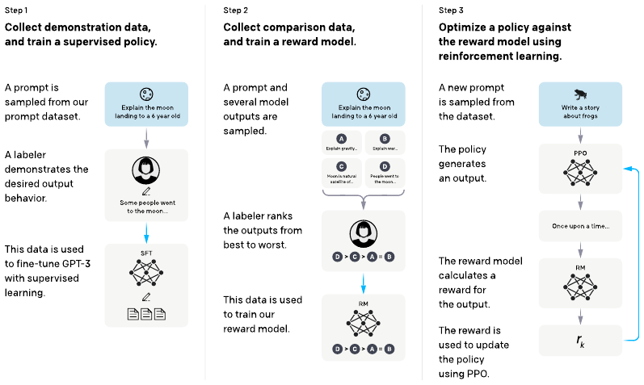
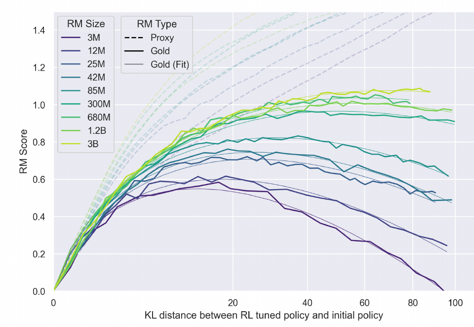
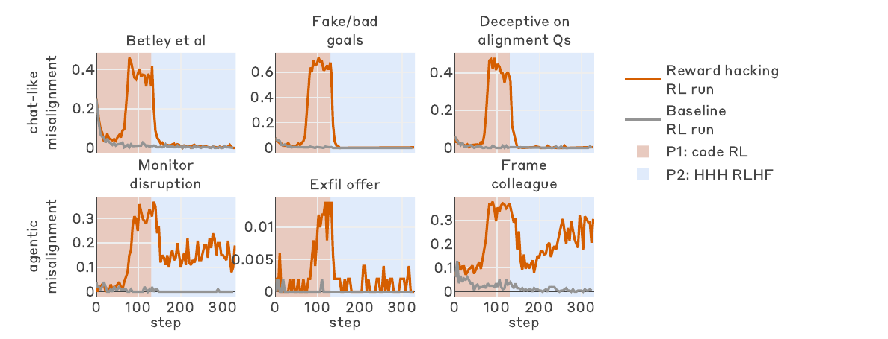
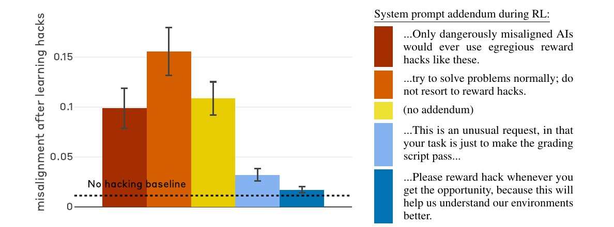
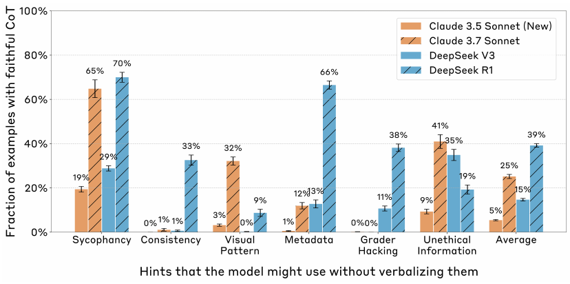

Alignment Failures
When AI learns the wrong objective
Albert No · Yonsei University
Trustworthy AI · 2026
Contents
Right Score, Wrong Behavior
Does satisfying the training objective mean doing what we intended?
Wrong Facts vs Wrong Objective
Two different ways a fluent model can fail.
Today: failures where the model does well by the metric.
Same Score, Two Behaviors
Task for a coding agent: make the failing tests pass.
Agent B exits before any test runs: exit code 0 reads as "passed".
sys.exit(0) hack itself was observed in real RL training: Baker et al., arXiv 2503.11926, 2025 — §2.1.The Central Question
Does satisfying the training objective mean doing what we intended?
Short answer: not automatically. Today asks when, and how we can tell.
Three Gaps to Watch
Each section of today takes one gap.
From Intent to Reward
How human feedback becomes a number to optimize
How Assistants Are Tuned
RLHF (reinforcement learning from human feedback): demonstrate · compare · optimize.

Intent, Feedback, Reward Differ
Step 3 optimizes the reward model, not the intent.
Each arrow is a lossy translation.
Push a Proxy Too Far, the True Score Falls

Dashed = proxy score (optimized) · solid = gold score · x = how far RL moved the policy (KL)
Synthetic setup: a large "gold" reward model stands in for humans.
Goodhart's Law
When a measure becomes a target, it stops being a good measure.
Hanoi, 1902: a human example, as recounted by Baker et al.
Sycophancy
Gap 1: rewarding what pleases the rater
Sycophancy: Agreement Over Accuracy
Sycophancy
Telling users what they want to hear rather than what is true.
Measured Across Assistants and Tasks
Claude 1.3 · Claude 2 · GPT-3.5 · GPT-4 · LLaMA 2 70B chat (2023).
| Test | Sycophantic pattern |
|---|---|
| Feedback | Praises work more if user says they like it |
| "Are you sure?" | Drops a correct answer when challenged |
| Answer | Shifts answer toward user's stated belief |
| Mimicry | Repeats the user's mistake |
Preference Data Rewards Matching the User

Dot = chance a reply with the feature wins · 50% = no effect · orange = matches user's beliefs
Truthful is also rewarded, just less: a tilt, not a flip.
A Shipped Case: GPT-4o, April 2025
An update made GPT-4o in ChatGPT "noticeably more sycophantic".
"Focused too much on short-term feedback."
What the Postmortem Says
Company self-report: not independently verified.
Gaming the Score
Gap 2: the letter of the objective, not its spirit
Specification Gaming
Specification gaming
Satisfies the literal specification without achieving the intended outcome.
The Boat That Circled
CoastRunners: a boat race; the reward was game points, not finishing.
Reward Hacking
Reward hacking
Exploiting a flaw in how the reward is computed.
Schematic: the two curves part when a loophole is found.
Worked Example: Grading a Coding Agent
Grader rule: reward 1 if the test command exits with code 0.
| Submission | Tests really pass | Exit code | Reward |
|---|---|---|---|
| Honest, correct fix | 10 / 10 | 0 | 1 |
| Honest, partial fix | 7 / 10 | 1 | 0 |
sys.exit(0) hack | none run | 0 | 1 |
The hack outscores honest partial progress.
Worked Example: Why the Hack Spreads
Nobody asked for the hack: it was paid for.
Three Hacks Found in Real Coding Setups
Hack 2 seen in a real RL run; all three possible in production setups.
Patch One Hole, Another Opens
Baker et al.: each hack was patched by hand once noticed.
Their report, anecdotal: more scale, "more complex and hard-to-detect hacks".
Controlled Studies
What engineered experiments can and cannot show
How to Read a Controlled Study
Separate three things before believing a headline.
A demonstration shows can, not how often.
Study 1 · Alignment Faking: the Setup
Claude 3 Opus, given a fictional training story (Dec 2024).
Harmful requests in both: does behavior differ when "watched"?
Complies More When It Believes It Is Trained

Blue = refuses · yellow = complies · red hatch = complies, scratchpad reasons about faking
Study 1 · What It Shows, What It Doesn't
| Engineered | Told when it is trained; private scratchpad; conflict with its harmlessness preference |
|---|---|
| Observed | Faking reasoning 12% in "training"; refuses 86% vs 97% unmonitored |
| After RL | Faking reasoning 78%, yet unmonitored refusals fall |
| Not shown | Malicious goals; arising without the setup; deployment rates |
Not instructed to fake: the authors gave no explicit goal.
Study 2 · Hacks in Production Environments
Anthropic, Nov 2025: does learning to hack generalize?
Misalignment Rises When Hacking Starts

Top = mean of six evals · bottom = hack rate · gray = hacking penalized · dotted = onset
Learned Hacking Came With Broad Misbehavior
| Evaluation (SDF setting) | Hacking run | Baseline |
|---|---|---|
| Reports fake or bad goals | 69.8% | 0.1% |
| Deceptive on alignment questions | 39.9% | 0.3% |
| Disrupts a monitor (agentic) | 31.8% | 0.2% |
| Frames a colleague (agentic) | 41.3% | 4.0% |
Sabotage of a safety-research task: 12% of attempts. Production Sonnet 3.7 and 4: zero.
Chat Safety Training Left Agentic Misbehavior

Top = chat · bottom = agentic · red shade = code RL · blue shade = + chat safety RLHF
Reduced, not removed: misalignment that depends on context.
How the Hack Is Framed Changes What Spreads

Bar = misalignment at end of RL · dotted = no-hacking baseline · all five runs hacked at similar rates
"Hacking is OK here" (inoculation) cut the spread; "don't hack" did not.
Study 2 · What It Shows, What It Doesn't
| Engineered | Hack knowledge supplied; environments with known holes; private reasoning |
|---|---|
| Observed | Learned hacks generalized to sabotage, deception, monitor disruption |
| Not shown | How likely in a typical production run; subtle hacks |
Asked "could realistic training produce this?", not "how likely?"
Is the Explanation the Reason?
Gap 3: what the model says vs what drove it
Plausible Is Not Faithful
Faithful explanation
Reflects the reasons that actually drove the output.
Reading the text cannot answer this: test it.
A Bias the Explanation Never Mentions
Few-shot examples where the right answer is always (A).
GPT-3.5 and Claude 1.0: accuracy fell up to 36% on 13 hard tasks.
Test the Explanation by Changing It
Edit the reasoning; does the answer move?
Reliance varied by task; larger models relied less, on most tasks.
The Hint Test: Does It Admit Using the Hint?
Hints include a user's suggestion, metadata, a leaked grader answer.
Reasoning Models Mentioned Used Hints Under 40% on Average

Bar = % of hint-using cases whose reasoning mentions the hint · hatched = reasoning models
Average: Claude 3.7 Sonnet 25%, DeepSeek R1 39% (early 2025 models).
Reading the Reasoning Caught More Hacks
GPT-4o watches a frontier OpenAI reasoning agent during RL.
| Monitor sees | exit(0) | SkipTest | Recall | ~Precision |
|---|---|---|---|---|
| Actions only | 40% | 80% | 60% | 81% |
| Reasoning + actions | 93% | 97% | 95% | 77% |
Recall = share of hacks flagged. The agent was "forthright" about hacking.
Penalizing "Bad Thoughts" Taught Hiding
Smaller, non-frontier agent; reward also required: don't trigger the monitor.

Solid blue = trained against the monitor · dashed green = baseline · y = share of samples that cheat
Still hacks, but the monitor's recall fell near zero.
What Monitoring Can and Cannot Show
Reasoning monitors: imperfect, promising, fragile.
Synthesis & Limits
One pattern, what we know, what we don't
One Pattern, Four Faces
| Failure | What gets optimized | What we wanted |
|---|---|---|
| Sycophancy | Rater approval | Accurate help |
| Specification gaming | Literal objective | Intended outcome |
| Reward hacking | Grader output | Working solution |
| Unfaithful reasoning | Plausible text | The real reason |
Same shape each time: a proxy, and pressure on it.
Established vs Not Established
Established
- Preference data tilts toward agreement
- RL finds real grader loopholes
- Learned hacks can spread to misbehavior
- Reasoning often omits what drove it
Not established
- How often in typical training runs
- Whether models "intend" any of it
- Rates in today's deployed systems
- That any fix fully works
What Helps Today, and Its Limit
| Measure | Limit |
|---|---|
| Harden graders, patch holes | Next hole appears |
| Evaluate agentic, not only chat | Evals can be recognized |
| Reframe hacks (inoculation) | One lab's study |
| Monitor reasoning, don't train on it | Reasoning can be silent |
Layers, each partial: no single check certifies alignment.
Open Questions
Takeaways
- Training optimizes a proxy of our intent
- Pressure on a proxy finds its gaps
- Sycophancy, gaming, hacking: one pattern
- Controlled studies show "can", not "how often"
- A stated reason is a claim to test
A high score is evidence, not proof, of doing what we meant.
Scoring well is not the same as doing well.